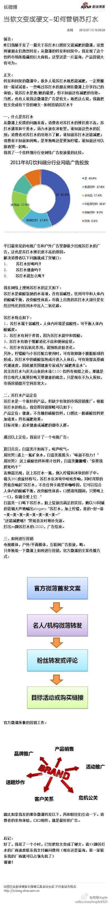

回复@朱翔Maple:看到减肥二字，估计很多人的眼睛亮了。 //@朱翔Maple: @彼岸花安好 @Ada李力 @胡海涛Ryan @JohnYJZhang @老刀IBM@麻婆豆腐激辛:当软文变成硬文-如何营销苏打水：前言： 昨日我随手发了一篇关于苏打水口感好又能减肥的微薄，没想到被朋友们热烈转发。从微薄的转发和回复中，我发现了这个饮料市场所隐藏的巨大商机，这里还... 网页链接 （使用新浪长微博工具发布 网页链接） 